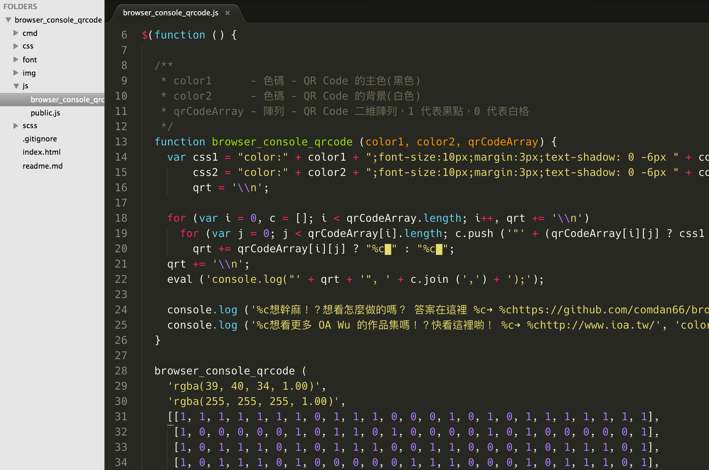
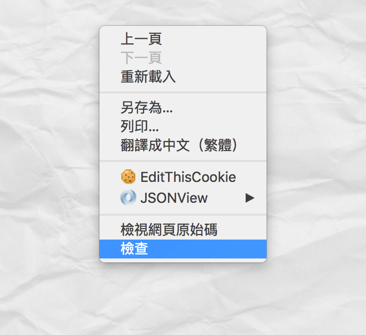
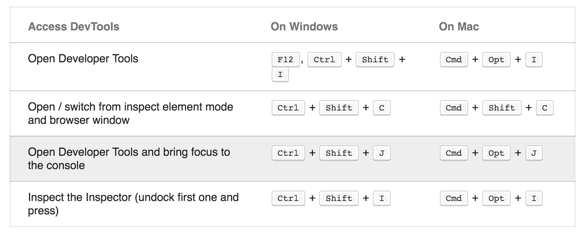
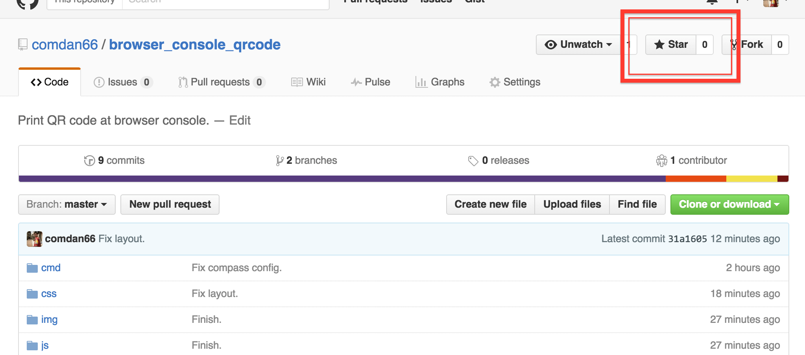

在瀏覽器 Console 上畫 QR Code！
一起來用 Browser Console 畫畫吧！
- 請按滑鼠右鍵，選擇檢視再選擇Console吧！
- Mac Chrome 電腦鍵盤快捷鍵 Cmd + Option + J 打開！
- Windows、Linux Chrome 電腦鍵盤快捷鍵 Ctrl + Shift + J 打開！
- 關鍵程式碼在 js/browser_console_qrcode.js 內，程式碼有簡易註解，請各位大大服用！
- 主要先利用二維陣列表示 QR Code，以 1 代表黑點、0 代表白點，再轉換成要印出的字串。
- 接著利用 JavaScript eval 將組合出的 console.log 字串執行！
- GitHub 在這裡，Demo 的話看這裡，可以的話幫我按一下 GitHub 星星吧！
- 主要利用 Console.log 的方式印出，其中使用基本 css 語法修飾。
- 會使用 text-shadow 主要是要掩飾換行的行距空白，line-height 不能設太小，所以利用 text-shadow 掩飾空白處！
- 因為 Safari 的 Console 對於空白的處理寬度不同，所以也需要對白點做 css 設定！
- 若各位大大覺得有趣或不錯的話，請幫我在 GitHub 上按個喜歡吧！
- 相關參考：Colors in JavaScript console - stackoverflow

關鍵 JavaScript
Console 介面即可見 QR Code

滑鼠右鍵，選擇 檢視 選擇 Console

Chrome 快捷鍵

快點星星！